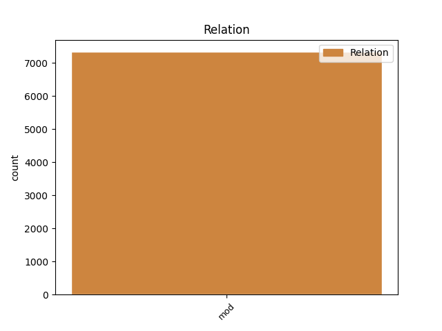
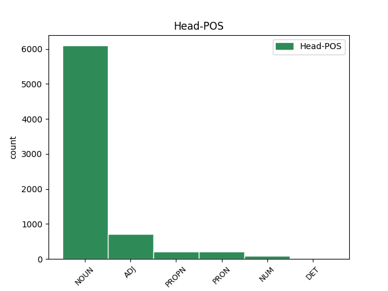
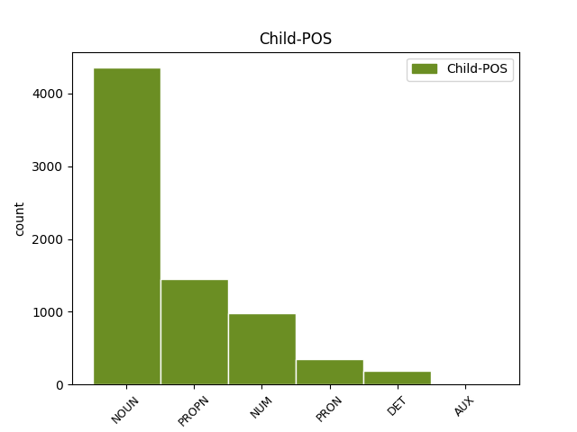

Distribution of features within this leaf



Agreement Rules sorted by frequency.
- When the dependent token is the modifer(mod) of the head token, and the head token is NOUN and the dependent token is NUM.
1 " _ _ _ _ 0 _ _ _
2 Raiskisen _ _ _ _ 0 _ _ _
3 kohdalla _ _ _ _ 0 _ _ _
4 kaikki _ _ _ _ 0 _ _ _
5 on _ _ _ _ 0 _ _ _
6 kuitenkin _ _ _ _ 0 _ _ _
7 yhtä yksi NUM Num,Card,Sg,Par Case=Par|Number=Sing|NumType=Card 8 mod _ _
8 kysymysmerkkiä kysymysmerkki NOUN N,Sg,Par Case=Par|Number=Sing 0 _ _ _
9 " _ _ _ _ 0 _ _ _
10 , _ _ _ _ 0 _ _ _
11 hän _ _ _ _ 0 _ _ _
12 sanoo _ _ _ _ 0 _ _ _
13 . _ _ _ _ 0 _ _ _
1 Venäjänhän _ _ _ _ 0 _ _ _
2 asioita _ _ _ _ 0 _ _ _
3 on _ _ _ _ 0 _ _ _
4 jo _ _ _ _ 0 _ _ _
5 pitkään _ _ _ _ 0 _ _ _
6 hoideltu _ _ _ _ 0 _ _ _
7 pikapaikkauksin pikapaikkaus NOUN N,Pl,Ins Case=Ins|Number=Plur 0 _ _ _
8 , _ _ _ _ 0 _ _ _
9 presidentin _ _ _ _ 0 _ _ _
10 ukaasein ukaasi NOUN N,Pl,Ins Case=Ins|Number=Plur 7 mod _ _
11 , _ _ _ _ 0 _ _ _
12 jotka _ _ _ _ 0 _ _ _
13 saattavat _ _ _ _ 0 _ _ _
14 olla _ _ _ _ 0 _ _ _
15 ristiriidassa _ _ _ _ 0 _ _ _
16 lain _ _ _ _ 0 _ _ _
17 kanssa _ _ _ _ 0 _ _ _
18 mutta _ _ _ _ 0 _ _ _
19 joilla _ _ _ _ 0 _ _ _
20 saadaan _ _ _ _ 0 _ _ _
21 lakia _ _ _ _ 0 _ _ _
22 nopeammin _ _ _ _ 0 _ _ _
23 muutoksia _ _ _ _ 0 _ _ _
24 aikaan _ _ _ _ 0 _ _ _
25 . _ _ _ _ 0 _ _ _
1 " _ _ _ _ 0 _ _ _
2 Suomi _ _ _ _ 0 _ _ _
3 " _ _ _ _ 0 _ _ _
4 kuulemma _ _ _ _ 0 _ _ _
5 hävisi _ _ _ _ 0 _ _ _
6 Unicefin unicef PROPN N,Prop,Sg,Gen Case=Gen|Number=Sing 7 mod _ _
7 pääjohtajakilvan pääjohtajakilpa NOUN N,Sg,Gen Case=Gen|Number=Sing 0 _ _ _
8 . _ _ _ _ 0 _ _ _
1 Ensin _ _ _ _ 0 _ _ _
2 tuodaan _ _ _ _ 0 _ _ _
3 keskelle _ _ _ _ 0 _ _ _
4 tämmöistä tämmöinen DET A,Dem,Sg,Par Case=Par|Number=Sing|PronType=Dem 5 mod _ Alt=DET
5 kaatosadetta kaatosade NOUN N,Sg,Par Case=Par|Number=Sing 0 _ _ _
6 ja _ _ _ _ 0 _ _ _
7 sitten _ _ _ _ 0 _ _ _
8 ei _ _ _ _ 0 _ _ _
9 tiedetä _ _ _ _ 0 _ _ _
10 edes _ _ _ _ 0 _ _ _
11 oikeaa _ _ _ _ 0 _ _ _
12 hotellia _ _ _ _ 0 _ _ _
13 ! _ _ _ _ 0 _ _ _
1 Se se PRON Pron,Dem,Sg,Nom Case=Nom|Number=Sing|PronType=Dem 0 _ _ _
2 saa _ _ _ _ 0 _ _ _
3 kyllä _ _ _ _ 0 _ _ _
4 helpolla _ _ _ _ 0 _ _ _
5 leipänsä _ _ _ _ 0 _ _ _
6 se _ _ _ _ 0 _ _ _
7 jätkä jätkä NOUN N,Sg,Nom Case=Nom|Number=Sing 1 mod _ _
8 loppujen _ _ _ _ 0 _ _ _
9 lopuksi _ _ _ _ 0 _ _ _
10 jumalauta _ _ _ _ 0 _ _ _
11 . _ _ _ _ 0 _ _ _
1 Ja _ _ _ _ 0 _ _ _
2 se se PRON Pron,Dem,Sg,Nom Case=Nom|Number=Sing|PronType=Dem 0 _ _ _
3 on _ _ _ _ 0 _ _ _
4 hiton _ _ _ _ 0 _ _ _
5 reilusti _ _ _ _ 0 _ _ _
6 sanottu _ _ _ _ 0 _ _ _
7 , _ _ _ _ 0 _ _ _
8 se se PRON Pron,Dem,Sg,Nom Case=Nom|Number=Sing|PronType=Dem 2 mod _ _
9 . _ _ _ _ 0 _ _ _
1 Tuon _ _ _ _ 0 _ _ _
2 jälkeen _ _ _ _ 0 _ _ _
3 olin _ _ _ _ 0 _ _ _
4 vuoden _ _ _ _ 0 _ _ _
5 Nuoren _ _ _ _ 0 _ _ _
6 Keskustan _ _ _ _ 0 _ _ _
7 Liiton liitto PROPN N,Prop,Sg,Gen Case=Gen|Number=Sing 8 mod _ _
8 Pohjois-Hämeen pohjois-häme PROPN N,Prop,Sg,Gen Case=Gen|Number=Sing 0 _ _ _
9 piirin _ _ _ _ 0 _ _ _
10 puheenjohtajana _ _ _ _ 0 _ _ _
11 , _ _ _ _ 0 _ _ _
12 muistaakseni _ _ _ _ 0 _ _ _
13 vuosi _ _ _ _ 0 _ _ _
14 oli _ _ _ _ 0 _ _ _
15 1979 _ _ _ _ 0 _ _ _
16 . _ _ _ _ 0 _ _ _
1 Vai _ _ _ _ 0 _ _ _
2 ollaan _ _ _ _ 0 _ _ _
3 sitä se PRON Pron,Dem,Sg,Par Case=Par|Number=Sing|PronType=Dem 6 mod _ _
4 nyt _ _ _ _ 0 _ _ _
5 taas _ _ _ _ 0 _ _ _
6 setää setä NOUN N,Sg,Par Case=Par|Number=Sing 0 _ _ _
7 ? _ _ _ _ 0 _ _ _
1 Näistä _ _ _ _ 0 _ _ _
2 yksi yksi NUM Num,Card,Sg,Nom Case=Nom|Number=Sing|NumType=Card 0 _ _ _
3 , _ _ _ _ 0 _ _ _
4 siis _ _ _ _ 0 _ _ _
5 vain _ _ _ _ 0 _ _ _
6 yksi yksi NUM Num,Card,Sg,Nom Case=Nom|Number=Sing|NumType=Card 2 mod _ _
7 rupesi _ _ _ _ 0 _ _ _
8 kasvattamaan _ _ _ _ 0 _ _ _
9 itseään _ _ _ _ 0 _ _ _
10 kuin _ _ _ _ 0 _ _ _
11 kide _ _ _ _ 0 _ _ _
12 . _ _ _ _ 0 _ _ _
1 niin _ _ _ _ 0 _ _ _
2 luvattiin _ _ _ _ 0 _ _ _
3 , _ _ _ _ 0 _ _ _
4 mutta _ _ _ _ 0 _ _ _
5 älä _ _ _ _ 0 _ _ _
6 Anna anna PROPN N,Prop,Sg,Nom Case=Nom|Number=Sing 0 _ _ _
7 kiltti kiltti NOUN N,Sg,Nom Case=Nom|Number=Sing 6 mod _ _
8 hermostu _ _ _ _ 0 _ _ _
9 . _ _ _ _ 0 _ _ _
1 Siellä _ _ _ _ 0 _ _ _
2 oli _ _ _ _ 0 _ _ _
3 ihan _ _ _ _ 0 _ _ _
4 vitun vittu NOUN N,Sg,Gen Case=Gen|Number=Sing 5 mod _ _
5 sairaan sairas ADJ A,Sg,Gen Case=Gen|Number=Sing 0 _ _ _
6 paljon _ _ _ _ 0 _ _ _
7 kamaa _ _ _ _ 0 _ _ _
8 . _ _ _ _ 0 _ _ _
1 Voisitko _ _ _ _ 0 _ _ _
2 kertoa _ _ _ _ 0 _ _ _
3 , _ _ _ _ 0 _ _ _
4 määrittää _ _ _ _ 0 _ _ _
5 noin _ _ _ _ 0 _ _ _
6 yleisesti _ _ _ _ 0 _ _ _
7 että _ _ _ _ 0 _ _ _
8 mikä _ _ _ _ 0 _ _ _
9 tämän _ _ _ _ 0 _ _ _
10 kehitysavun _ _ _ _ 0 _ _ _
11 , _ _ _ _ 0 _ _ _
12 tommonen tuommoinen DET A,Dem,Sg,Nom Case=Nom|Number=Sing|PronType=Dem|Style=Coll 13 mod _ Alt=DET
13 yleinen yleinen ADJ A,Sg,Nom Case=Nom|Number=Sing 0 _ _ _
14 , _ _ _ _ 0 _ _ _
15 päämäärä _ _ _ _ 0 _ _ _
16 ja _ _ _ _ 0 _ _ _
17 pyrkimys _ _ _ _ 0 _ _ _
18 on _ _ _ _ 0 _ _ _
19 . _ _ _ _ 0 _ _ _
1 Hei _ _ _ _ 0 _ _ _
2 älkää _ _ _ _ 0 _ _ _
3 päästäkö _ _ _ _ 0 _ _ _
4 sitä _ _ _ _ 0 _ _ _
5 , _ _ _ _ 0 _ _ _
6 tule _ _ _ _ 0 _ _ _
7 Lauri lauri PROPN N,Prop,Sg,Nom Case=Nom|Number=Sing 0 _ _ _
8 sinä sinä PRON Pron,Pers,Sg2,Nom Case=Nom|Number=Sing|Person=2|PronType=Prs 7 mod _ _
9 tänne _ _ _ _ 0 _ _ _
10 , _ _ _ _ 0 _ _ _
11 tule _ _ _ _ 0 _ _ _
12 . _ _ _ _ 0 _ _ _
1 " _ _ _ _ 0 _ _ _
2 Et _ _ _ _ 0 _ _ _
3 viitsisi _ _ _ _ 0 _ _ _
4 leipasta _ _ _ _ 0 _ _ _
5 edes _ _ _ _ 0 _ _ _
6 muutamaa _ _ _ _ 0 _ _ _
7 piparkakkuveturia _ _ _ _ 0 _ _ _
8 ja _ _ _ _ 0 _ _ _
9 yhtä yksi NUM Num,Card,Sg,Par Case=Par|Number=Sing|NumType=Card 10 mod _ _
10 suurta suuri ADJ A,Sg,Par Case=Par|Number=Sing 0 _ _ _
11 piparkakkutaloa _ _ _ _ 0 _ _ _
12 " _ _ _ _ 0 _ _ _
13 . _ _ _ _ 0 _ _ _
1 Iteki itse PRON Pron,Refl,Sg,Nom,Kin Case=Nom|Clitic=Kin|Number=Sing|Reflex=Yes|Style=Coll 4 mod _ _
2 olin _ _ _ _ 0 _ _ _
3 siitä _ _ _ _ 0 _ _ _
4 kiinnostunu kiinnostunut ADJ A,Sg,Nom Case=Nom|Number=Sing 0 _ _ _
5 , _ _ _ _ 0 _ _ _
6 mut _ _ _ _ 0 _ _ _
7 se _ _ _ _ 0 _ _ _
8 halus _ _ _ _ 0 _ _ _
9 tän _ _ _ _ 0 _ _ _
10 mun _ _ _ _ 0 _ _ _
11 kaverin _ _ _ _ 0 _ _ _
12 ja _ _ _ _ 0 _ _ _
13 mun _ _ _ _ 0 _ _ _
14 piti _ _ _ _ 0 _ _ _
15 vaan _ _ _ _ 0 _ _ _
16 päästä _ _ _ _ 0 _ _ _
17 siitä _ _ _ _ 0 _ _ _
18 yli _ _ _ _ 0 _ _ _
19 ja _ _ _ _ 0 _ _ _
20 pääsinki _ _ _ _ 0 _ _ _
21 ku _ _ _ _ 0 _ _ _
22 kuulin _ _ _ _ 0 _ _ _
23 millanen _ _ _ _ 0 _ _ _
24 se _ _ _ _ 0 _ _ _
25 oli _ _ _ _ 0 _ _ _
26 . _ _ _ _ 0 _ _ _
1 Perkele _ _ _ _ 0 _ _ _
2 kyllä _ _ _ _ 0 _ _ _
3 se se PRON Pron,Dem,Sg,Nom Case=Nom|Number=Sing|PronType=Dem 0 _ _ _
4 on _ _ _ _ 0 _ _ _
5 yksi _ _ _ _ 0 _ _ _
6 torvi _ _ _ _ 0 _ _ _
7 se _ _ _ _ 0 _ _ _
8 Sundberi sundberi PROPN N,Prop,Sg,Nom Case=Nom|Number=Sing 3 mod _ _
9 siellä _ _ _ _ 0 _ _ _
10 . _ _ _ _ 0 _ _ _
1 Lähden _ _ _ _ 0 _ _ _
2 kello kello NOUN N,Sg,Nom Case=Nom|Number=Sing 3 mod _ _
3 kuusi kuusi NUM Num,Card,Sg,Nom Case=Nom|Number=Sing|NumType=Card 0 _ _ _
1 Ku _ _ _ _ 0 _ _ _
2 me _ _ _ _ 0 _ _ _
3 oltiin _ _ _ _ 0 _ _ _
4 yksie _ _ _ _ 0 _ _ _
5 Kaisan _ _ _ _ 0 _ _ _
6 ja _ _ _ _ 0 _ _ _
7 Pepen _ _ _ _ 0 _ _ _
8 häissä _ _ _ _ 0 _ _ _
9 täs _ _ _ _ 0 _ _ _
10 millos _ _ _ _ 0 _ _ _
11 se _ _ _ _ 0 _ _ _
12 nyt _ _ _ _ 0 _ _ _
13 oli _ _ _ _ 0 _ _ _
14 syyskuun _ _ _ _ 0 _ _ _
15 alussa _ _ _ _ 0 _ _ _
16 ni _ _ _ _ 0 _ _ _
17 ni _ _ _ _ 0 _ _ _
18 sitte _ _ _ _ 0 _ _ _
19 sen _ _ _ _ 0 _ _ _
20 Pepen _ _ _ _ 0 _ _ _
21 tän _ _ _ _ 0 _ _ _
22 sulhasen _ _ _ _ 0 _ _ _
23 ni _ _ _ _ 0 _ _ _
24 vanhoja _ _ _ _ 0 _ _ _
25 kavereita _ _ _ _ 0 _ _ _
26 on _ _ _ _ 0 _ _ _
27 siel _ _ _ _ 0 _ _ _
28 on _ _ _ _ 0 _ _ _
29 yks yksi NUM Num,Card,Sg,Nom Case=Nom|Number=Sing|NumType=Card|Style=Coll 30 mod _ _
30 Teemu teemu PROPN N,Prop,Sg,Nom Case=Nom|Number=Sing 0 _ _ _
31 opiskelee _ _ _ _ 0 _ _ _
32 arkkitehtuurii _ _ _ _ 0 _ _ _
33 . _ _ _ _ 0 _ _ _
1 Muoviautoja _ _ _ _ 0 _ _ _
2 Rauman _ _ _ _ 0 _ _ _
3 " _ _ _ _ 0 _ _ _
4 autotehdas _ _ _ _ 0 _ _ _
5 " _ _ _ _ 0 _ _ _
6 valmistaa _ _ _ _ 0 _ _ _
7 enemmän _ _ _ _ 0 _ _ _
8 kuin _ _ _ _ 0 _ _ _
9 yksikään yksi NUM Num,Card,Sg,Nom,Kaan Case=Nom|Clitic=Kaan|Number=Sing|NumType=Card 10 mod _ _
10 muu muu DET Pron,Qnt,Sg,Nom Case=Nom|Number=Sing|PronType=Ind 0 _ _ _
11 tehdas _ _ _ _ 0 _ _ _
12 . _ _ _ _ 0 _ _ _
1 Niitä ne PRON Pron,Dem,Pl,Par Case=Par|Number=Plur|PronType=Dem 0 _ _ _
2 on _ _ _ _ 0 _ _ _
3 tuhansia tuhat NUM Num,Card,Pl,Par Case=Par|Number=Plur|NumType=Card 1 mod _ _
4 ajautunut _ _ _ _ 0 _ _ _
5 Englantiin _ _ _ _ 0 _ _ _
6 myrskyjen _ _ _ _ 0 _ _ _
7 vuoksi _ _ _ _ 0 _ _ _
8 . _ _ _ _ 0 _ _ _
1 Auton _ _ _ _ 0 _ _ _
2 nimi _ _ _ _ 0 _ _ _
3 on _ _ _ _ 0 _ _ _
4 suomalaisittain _ _ _ _ 0 _ _ _
5 ajankohtainen ajankohtainen ADJ A,Sg,Nom Case=Nom|Number=Sing 0 _ _ _
6 : _ _ _ _ 0 _ _ _
7 Wolseley wolseley PROPN N,Prop,Sg,Nom Case=Nom|Number=Sing 5 mod _ Alt=name
8 Hornet _ _ _ _ 0 _ _ _
9 ! _ _ _ _ 0 _ _ _
1 Koko _ _ _ _ 0 _ _ _
2 urakka _ _ _ _ 0 _ _ _
3 kesti _ _ _ _ 0 _ _ _
4 semmoiset semmoinen DET A,Dem,Pl,Nom Case=Nom|Number=Plur|PronType=Dem 5 mod _ Alt=DET
5 kymmenen kymmenen NUM Num,Card,Sg,Nom Case=Nom|Number=Sing|NumType=Card 0 _ _ _
6 kuukautta _ _ _ _ 0 _ _ _
7 . _ _ _ _ 0 _ _ _
1 Heidän he DET Pron,Pers,Pl3,Gen Case=Gen|Number=Plur|Person=3|PronType=Prs 0 _ _ _
2 kaikkien kaikki PRON Pron,Qnt,Pl,Gen Case=Gen|Number=Plur|PronType=Ind 1 mod _ FTB-PronType=Qnt
3 työtä _ _ _ _ 0 _ _ _
4 vaikeutti _ _ _ _ 0 _ _ _
5 se _ _ _ _ 0 _ _ _
6 , _ _ _ _ 0 _ _ _
7 että _ _ _ _ 0 _ _ _
8 heille _ _ _ _ 0 _ _ _
9 oli _ _ _ _ 0 _ _ _
10 annettu _ _ _ _ 0 _ _ _
11 niin _ _ _ _ 0 _ _ _
12 ahtaat _ _ _ _ 0 _ _ _
13 puitteet _ _ _ _ 0 _ _ _
14 . _ _ _ _ 0 _ _ _
1 Kun _ _ _ _ 0 _ _ _
2 meillä _ _ _ _ 0 _ _ _
3 on _ _ _ _ 0 _ _ _
4 ollu _ _ _ _ 0 _ _ _
5 semmonen semmoinen DET A,Dem,Sg,Nom Case=Nom|Number=Sing|PronType=Dem|Style=Coll 6 mod _ Alt=DET
6 Arja arja PROPN N,Prop,Sg,Nom Case=Nom|Number=Sing 0 _ _ _
7 Jokine _ _ _ _ 0 _ _ _
8 joka _ _ _ _ 0 _ _ _
9 on _ _ _ _ 0 _ _ _
10 ollu _ _ _ _ 0 _ _ _
11 täällä _ _ _ _ 0 _ _ _
12 meillä _ _ _ _ 0 _ _ _
13 täs _ _ _ _ 0 _ _ _
14 , _ _ _ _ 0 _ _ _
15 tämmösessä _ _ _ _ 0 _ _ _
16 oikeakielisyydestä _ _ _ _ 0 _ _ _
17 puhumas _ _ _ _ 0 _ _ _
18 mä _ _ _ _ 0 _ _ _
19 en _ _ _ _ 0 _ _ _
20 tiä _ _ _ _ 0 _ _ _
21 tunnek _ _ _ _ 0 _ _ _
22 sä _ _ _ _ 0 _ _ _
23 semmost _ _ _ _ 0 _ _ _
24 tyttöö _ _ _ _ 0 _ _ _
25 . _ _ _ _ 0 _ _ _
1 Kenen kuka DET Pron,Interr,Sg,Gen Case=Gen|Number=Sing|PronType=Int 0 _ _ _
2 luottamusta _ _ _ _ 0 _ _ _
3 hallituksen _ _ _ _ 0 _ _ _
4 pitikään _ _ _ _ 0 _ _ _
5 nauttia _ _ _ _ 0 _ _ _
6 , _ _ _ _ 0 _ _ _
7 SAK:n sak PROPN N,Abbr,Prop,Sg,Gen Abbr=Yes|Case=Gen|Number=Sing 1 mod _ _
8 vai _ _ _ _ 0 _ _ _
9 eduskunnan _ _ _ _ 0 _ _ _
10 ? _ _ _ _ 0 _ _ _
Disagree Examples:
1 me _ _ _ _ 0 _ _ _
2 tulthin _ _ _ _ 0 _ _ _
3 takaapäij _ _ _ _ 0 _ _ _
4 ja _ _ _ _ 0 _ _ _
5 vettä vesi NOUN N,Sg,Par Case=Par|Number=Sing 0 _ _ _
6 vaan _ _ _ _ 0 _ _ _
7 niskaha niska NOUN N,Sg,Ill Case=Ill|Number=Sing|Style=Coll 5 mod _ _
1 et _ _ _ _ 0 _ _ _
2 nyt _ _ _ _ 0 _ _ _
3 täsä _ _ _ _ 0 _ _ _
4 on _ _ _ _ 0 _ _ _
5 viäl _ _ _ _ 0 _ _ _
6 aikka aika NOUN N,Sg,Par Case=Par|Number=Sing|Style=Coll 0 _ _ _
7 siihem se PRON Pron,Dem,Sg,Ill Case=Ill|Number=Sing|PronType=Dem|Style=Coll 6 mod _ _
8 pualtoista _ _ _ _ 0 _ _ _
9 kuukaut _ _ _ _ 0 _ _ _
10 melkke _ _ _ _ 0 _ _ _
11 . _ _ _ _ 0 _ _ _
1 et _ _ _ _ 0 _ _ _
2 nyt _ _ _ _ 0 _ _ _
3 täsä _ _ _ _ 0 _ _ _
4 on _ _ _ _ 0 _ _ _
5 viäl _ _ _ _ 0 _ _ _
6 aikka _ _ _ _ 0 _ _ _
7 siihem _ _ _ _ 0 _ _ _
8 pualtoista puolitoista NUM Num,Card,Sg,Nom Case=Nom|Number=Sing|NumType=Card|Style=Coll 9 mod _ _
9 kuukaut kuukausi NOUN N,Sg,Par Case=Par|Number=Sing|Style=Coll 0 _ _ _
10 melkke _ _ _ _ 0 _ _ _
11 . _ _ _ _ 0 _ _ _
1 katle _ _ _ _ 0 _ _ _
2 aknast _ _ _ _ 0 _ _ _
3 , _ _ _ _ 0 _ _ _
4 kon _ _ _ _ 0 _ _ _
5 papla pappila NOUN N,Sg,Gen Case=Gen|Number=Sing|Style=Coll 6 mod _ _
6 mukulat mukula NOUN N,Pl,Nom Case=Nom|Number=Plur 0 _ _ _
7 tapleva _ _ _ _ 0 _ _ _
8 makrast _ _ _ _ 0 _ _ _
9 . _ _ _ _ 0 _ _ _
1 tää _ _ _ _ 0 _ _ _
2 olä _ _ _ _ 0 _ _ _
3 riih riihi NOUN N,Sg,Nom Case=Nom|Number=Sing|Style=Coll 0 _ _ _
4 alum alku NOUN N,Sg,Gen Case=Gen|Number=Sing|Style=Coll 3 mod _ Was18=advmod
5 pittäe _ _ _ _ 0 _ _ _
6 . _ _ _ _ 0 _ _ _